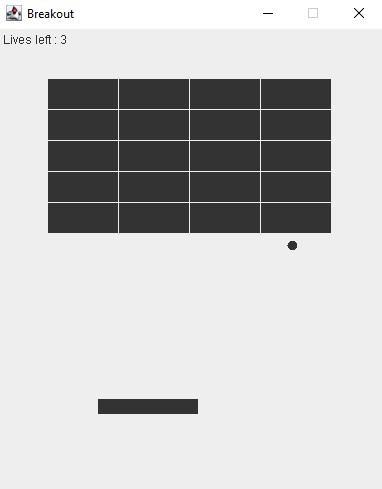
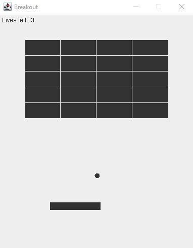
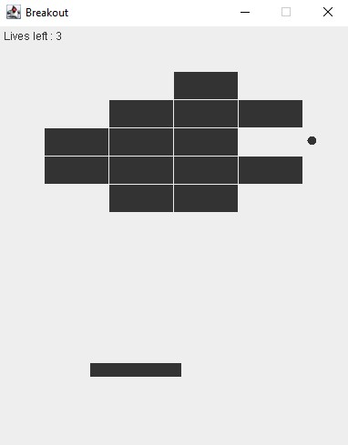
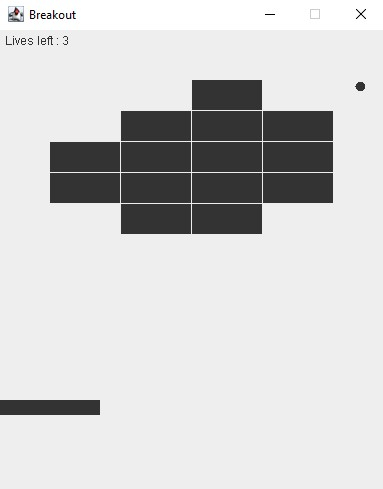
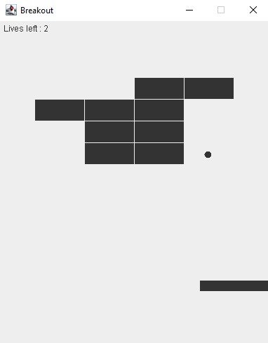
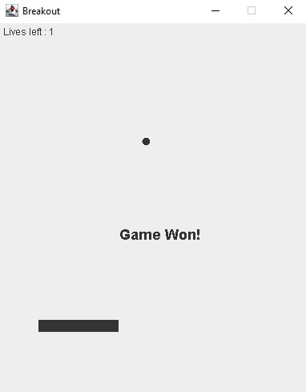
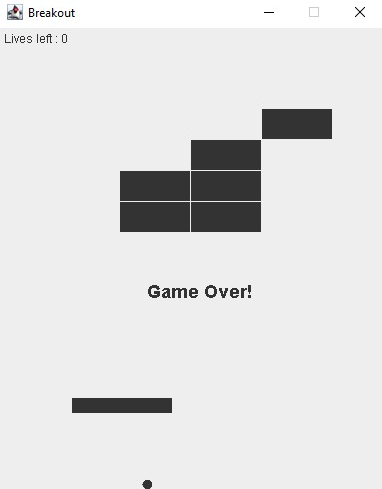

Breakout Game
Project Background
This project involved a scenario of taking over from another programmer to complete the build of a Breakout game.
Breakout involves a player moving a paddle horizontally to bounce a ball toward a grid of bricks. When the ball hits a brick, it breaks the brick out of the grid and the brick disappears. The player wins when all the bricks have been broken out of the grid or lose when the ball falls past the paddle three times.
Discovery
This game needed to be a simplified graphical version of the Atari game developed in 1976 with a simplified square grid.
In the game, the ball needed to bounce off the paddle and break the bricks, the player needed to move the paddle left and right within the bounds of the screen and win or lose the game.
The other programmer's unfinished source code was provided and included ‘TODO’ comments which hinted at the code that needed to be written.
Development
The game was written in Java and developed within the Eclipse IDE for Java Developers.
Testing
Testing was carried out with test cases to ensure the game functioned as intended and was usable. Testing was documented in a short report to discuss the type of tests conducted, the test results, bugs found and how they were addressed. Industry standards for quality compliance were also identified in the report and maintainability strategies implemented were discussed.
Deployment
The source code was uploaded to a GitHub repository after this project.
Take a Closer Look
The screenshots below show what the game looks like in action.
Screens for User Interaction
Simplified Graphics

Ball Bouncing off the Paddle

Bricks Breaking Out

Left Paddle Within Bounds

Right Paddle Within Bounds

Ending with a Win

Ending with a Loss
